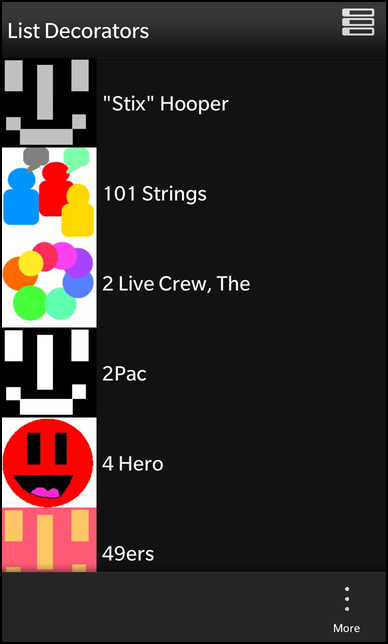

Contents
- Description
- Overview
- The UI
- The ApplicatoinUI class
- The DataModelLoggerDecorator class
- The DataQualityDataQueryDecorator class
- The DataQualityModelDecorator class
- The ExpandableDataModelDecorator class
- The GroupArtistDataModelDecorator class
- The GroupStyleDataQueryDecorator class
- The SelectionDataModelDecorator class
List Decorators Example
Files:
- listdecorators/precompiled.h
- listdecorators/assets/CoverArt.qml
- listdecorators/assets/DataLoggerDecorator.qml
- listdecorators/assets/DataQualityDecorator.qml
- listdecorators/assets/DataQualityListComponent.qml
- listdecorators/assets/ExpandableDecorator.qml
- listdecorators/assets/GroupArtistDecorator.qml
- listdecorators/assets/GroupArtistListComponent.qml
- listdecorators/assets/GroupStyleDecorator.qml
- listdecorators/assets/SelectableDecorator.qml
- listdecorators/assets/SelectableListComponent.qml
- listdecorators/assets/main.qml
- listdecorators/src/DataModelLoggerDecorator.cpp
- listdecorators/src/DataModelLoggerDecorator.hpp
- listdecorators/src/DataQualityDataQueryDecorator.cpp
- listdecorators/src/DataQualityDataQueryDecorator.hpp
- listdecorators/src/DataQualityModelDecorator.cpp
- listdecorators/src/DataQualityModelDecorator.hpp
- listdecorators/src/ExpandableDataModelDecorator.cpp
- listdecorators/src/ExpandableDataModelDecorator.hpp
- listdecorators/src/GroupArtistDataModelDecorator.cpp
- listdecorators/src/GroupArtistDataModelDecorator.hpp
- listdecorators/src/GroupStyleDataQueryDecorator.cpp
- listdecorators/src/GroupStyleDataQueryDecorator.hpp
- listdecorators/src/SelectionDataModelDecorator.cpp
- listdecorators/src/SelectionDataModelDecorator.hpp
- listdecorators/src/applicationui.cpp
- listdecorators/src/applicationui.hpp
- listdecorators/src/main.cpp
- listdecorators/listdecorators.pro
- listdecorators/translations/listdecorators.pro
Description
The List Decorators example shows how the user can extend the behaviour and enhance the appearance of ListView by extending and implementing additional functionality in the DataModel/DataQuery decorators.



Overview
In this example we'll learn how to extend the DataModelDecorator or the DataQueryDecorator. By extending these decorators it allows as to insert new data or to modify existing data to enrich the ListView appearance. This can also be useful when we want to reinterpret the data before it is used by ListView.
The UI
The UI of this sample application consists of a ListView that simply shows the content based on the selected custom decorator.
We create custom decorators in C++, register their types with qml and define them as attached objects.
// Each action item loads the appropriate data model and assigns it to the ListView actions: [ // GroupArtistDecorator menu ActionItem with attached object model GroupArtistDecorator { title: qsTr("GroupArtistModelDecorator") imageSource: "asset:///images/list_group.png" }, // GroupStyleDecorator menu ActionItem with attached object model GroupStyleDecorator { title: qsTr("GroupStyleDataQueryDecorator") imageSource: "asset:///images/list_group.png" }, // DataQualityDecorator menu ActionItem with attached object model DataQualityDecorator { title: qsTr("DataQualityDataQueryDecorator") imageSource: "asset:///images/list_quality.png" }, // ExpandableDecorator menu ActionItem with attached object model ExpandableDecorator { title: qsTr("ExpandableDecorator") imageSource: "asset:///images/list_expandable.png" }, // SelectableDecorator menu ActionItem with attached object model SelectableDecorator { title: qsTr("SelectableDecorator") imageSource: "asset:///images/list_selection.png" }, // DataLoggerDecorator menu ActionItem with attached object model DataLoggerDecorator { title: qsTr("DataLoggerDecorator") imageSource: "asset:///images/logging.png" }, // Default menu ActionItem using the default attached asyncDataModel ActionItem { title: qsTr("Reset") imageSource: "asset:///images/list_reset.png" ActionBar.placement: ActionBarPlacement.InOverflow onTriggered: { listView.dataModel = defaultModel } } ]
The ActionItem definitions for each decorator. Each ActionItem loads the appropriate data model and assigns the decorator model to the ListView when triggered. These definitions instantiate the decorators that will be used by this action item as attached objects.
// The ListView that's used to display the data using various decorators. ListView { id: listView layout: StackListLayout { headerMode: ListHeaderMode.Sticky } layoutProperties: StackLayoutProperties { spaceQuota: 1.0 } horizontalAlignment: HorizontalAlignment.Fill verticalAlignment: VerticalAlignment.Fill dataModel: defaultModel // This function deals with providing a default image // when none is provided. function imageurl(image) { if ("" == image || !_app.fileExists(image)) { return _sqlImagesDir + "../../../native/assets/images/no_image.png" } return _sqlImagesDir + image; } onTriggered: { clearSelection() select(indexPath) } listItemComponents: [ // ListComponent's (header and "") to represent default dataModel's ListItemComponent { type: "header" Container { horizontalAlignment: HorizontalAlignment.Fill verticalAlignment: VerticalAlignment.Center background: Color.create("#0098F0") Label { horizontalAlignment: HorizontalAlignment.Center verticalAlignment: VerticalAlignment.Center preferredHeight: 200 text: ListItemData.header } Container { background: Color.White Divider { } } } }, ListItemComponent { type: "" Container { id: item layout: StackLayout { orientation: LayoutOrientation.LeftToRight } CoverArt { } Label { verticalAlignment: VerticalAlignment.Center text: ListItemData.name textStyle { base: SystemDefaults.TextStyles.PrimaryText } } } }, // ListComponent definitions to support the associated // data that they wish to display. GroupArtistListComponent { }, DataQualityListComponent { }, SelectableListComponent { } ] onSelectionChanged: { console.log("onSelectionChanged, selected: " + selected) } onActivationChanged: { console.log("onActivationChanged, active: " + active) } }
The ListView uses the defined data decorators as its data model based on which one is selected. This data model loading and changing is accomplished through the ActionItem's that were previously defined for each decorator. It also defines the custom ListItemComponent's to deal with the various decorator item types.
attachedObjects: [ // One of the default provided DataModel's AsyncDataModel { id: defaultModel query: SqlDataQuery { source: _sqlImagesDir + "/../discogs_small.db" query: "select name, primary_image, is_group from artist order by name" countQuery: "select count(*) from artist" onDataChanged: console.log("data changed: revision=" + revision) onError: console.log("SQL query error: " + code + ", " + message) } onLoaded: console.log("initial model data is loaded") } ]
Instantiates one of the default provided data model extensions as the default model for the ListView upon sample startup, the list view data model is always reverted to this model when user selects the "Reset" menu item.
// ActionItem dealing with the logging decorator // which illustrates how to provide logging for // debugging purposes. ActionItem { ActionBar.placement: ActionBarPlacement.InOverflow onTriggered: { dataLoggerDecorator.load() listView.dataModel = dataLoggerDecorator } attachedObjects: [ // Logger Decorator instantiation DataModelLoggerDecorator { id: dataLoggerDecorator model: defaultModel } ] }
This custom component declares a DataLoggerDecorator ActionItem, which loads the Decorator DataModel and assigns it to the ListView when triggered. This DataModel decorator is defined as an attached object. The amount of logging is increased upon triggering this item.
// ActionItem that deals with the Data Quality decorator, // which decorates the list data with quality icons based // on the quality field value. ActionItem { ActionBar.placement: ActionBarPlacement.InOverflow onTriggered: { dataQualityModel.load() listView.dataModel = dataQualityDecorator } attachedObjects: [ // DataQualityModelDecorator changes dataType in order to // use the custom ListItemComponent to display this data. DataQualityModelDecorator { id: dataQualityDecorator model: AsyncDataModel { id: dataQualityModel query: DataQualityDataQueryDecorator { query: SqlDataQuery { source: _sqlImagesDir + "/../discogs_small.db" query: "select name, data_quality,primary_image from artist" countQuery: "select count(*) from artist" onDataChanged: console.log("data changed: revision=" + revision) onError: console.log("SQL query error: " + code + ", " + message) } } onLoaded: console.log("initial model data is loaded") } } ] }
This custom component is a good example of how to chain the various decorator classes together with the default library convenience classes that are included with the library. With this component we provide an action item that triggers the loading of custom decorator classes that are designed to decorate the list items with icons based on their "data_quality" field data content.
The rest of the defined Decorator qml components follow the same above pattern, each defining the ActionItem representing the decorator, and the decorator as an attached object, which is loaded and assigned to the ListView upon it's triggering.
// Custom ListItemComponent that provides a different visual // display for group data items which have been identified in // conjunction with the GroupArtistDecorator. ListItemComponent { type: "group" Container { id: item horizontalAlignment: HorizontalAlignment.Fill layout: StackLayout { orientation: LayoutOrientation.LeftToRight } Container { layout: StackLayout { orientation: LayoutOrientation.LeftToRight } layoutProperties: StackLayoutProperties { spaceQuota: 1 } background: Color.Black CoverArt { } Container { layout: DockLayout { } layoutProperties: StackLayoutProperties { spaceQuota: 1 } verticalAlignment: VerticalAlignment.Center horizontalAlignment: HorizontalAlignment.Fill ImageView { verticalAlignment: VerticalAlignment.Center imageSource: "asset:///images/grouptag.png" opacity: 0.7 } Container { verticalAlignment: VerticalAlignment.Center leftPadding: 85 Label { horizontalAlignment: HorizontalAlignment.Left verticalAlignment: VerticalAlignment.Center text: ListItemData.name textStyle { base: SystemDefaults.TextStyles.PrimaryText } } } } } } }
These types of components define the custom ListItemComponent's that are used by the ListView to represent data from the model for items that are of a particular type (i.e. group). It contains whatever visual controls that you wish to use in order to represent the data in your list item.
The ApplicatoinUI class
ApplicatoinUI is the central class of the application that creates the UI and registers the various decorator classes.
ApplicationUI::ApplicationUI(bb::cascades::Application *app) : QObject(app) { qmlRegisterType<GroupArtistDataModelDecorator>("bb.cascades.decorators", 1, 2, "GroupArtistDataModelDecorator"); qmlRegisterType<GroupStyleDataQueryDecorator>("bb.cascades.decorators", 1, 2, "GroupStyleDataQueryDecorator"); qmlRegisterType<DataQualityDataQueryDecorator>("bb.cascades.decorators", 1, 2, "DataQualityDataQueryDecorator"); qmlRegisterType<DataQualityModelDecorator>("bb.cascades.decorators", 1, 2, "DataQualityModelDecorator"); qmlRegisterType<ExpandableDataModelDecorator>("bb.cascades.decorators", 1, 2, "ExpandableDataModelDecorator"); qmlRegisterType<SelectionDataModelDecorator>("bb.cascades.decorators", 1, 2, "SelectionDataModelDecorator"); qmlRegisterType<DataModelLoggerDecorator>("bb.cascades.decorators", 1, 2, "DataModelLoggerDecorator"); // create scene document from main.qml asset // set parent to created document to ensure it exists for the whole application lifetime QmlDocument *qml = QmlDocument::create("asset:///main.qml").parent(this); const QString workingDir = QDir::currentPath(); const QString dirPaths = QString::fromLatin1( "file://%1/app/public/data/images/").arg(workingDir); m_sqlImages = QDir(workingDir + "/app/public/data/images"); qml->documentContext()->setContextProperty("_sqlImagesDir", dirPaths); qml->documentContext()->setContextProperty("_app", this); // create root object for the UI AbstractPane *root = qml->createRootObject<AbstractPane>(); // set created root object as a scene app->setScene(root); }
Inside the constructor of ApplicatoinUI we register the decorators with the QML type system to enable the classes to be used as a data type within the QML code.
Afterwards we load the UI from the main.qml file and export the data images path QString object under the name '_sqlImagesDir' to QML context.
The DataModelLoggerDecorator class
Like any other data model decorators in Cascades, the DataModelLoggerDecorator also must inherit from the base class bb::cascades::datamanager::DataModelDecorator.
class DataModelLoggerDecorator: public bb::cascades::datamanager::DataModelDecorator { Q_OBJECT // Property for toggling data logging. Q_PROPERTY(bool dataDetails READ logData WRITE setLogData) // Property for toggling the start of each function logging. Q_PROPERTY(bool funcBegin READ logBegin WRITE setLogBegin) // Property for toggling itemsChanged callback events logging. Q_PROPERTY(bool allCallbacks READ logAllCallbacks WRITE setLogAllCallbacks) public: explicit DataModelLoggerDecorator(QObject *parent = 0); virtual ~DataModelLoggerDecorator(); /** * Call the method childCount of the DataModel it wraps * * @see DataModel */ virtual int childCount(const QVariantList &indexPath); /* * Call the method hasChildren of the DataModel it wraps * * @see DataModel */ virtual bool hasChildren(const QVariantList &indexPath); /** * Call the method itemType of the DataModel it wraps * * @see DataModel */ virtual QString itemType(const QVariantList &indexPath); /* * Call the method data of the DataModel it wraps * * @see DataModel */ virtual QVariant data(const QVariantList &indexPath); /** * Tell the DataModel to load if it has an invokable load() function. */ Q_INVOKABLE void load(); /** * Whether to log the details of each data item that is returned. * return If true, log all details. */ bool logData(); /** * Setter for the logData variable. */ void setLogData(bool enable); /** * Whether to log the start of each instrumented function. * return If true, log the start of functions. */ bool logBegin(); /** * Setter for the logBegin variable. */ void setLogBegin(bool enable); /** * Whether to log all itemsChanged callback events, or just the interesting ones, * e.g. add/remove. * return If true, log all itemsChanged callback events. */ bool logAllCallbacks(); /** * Setter for the logAllCallbacks variable. */ void setLogAllCallbacks(bool enable); public Q_SLOTS: // This method emits the onItemAdded signal with the added index path. virtual void onItemAdded(QVariantList indexPath); // This method emits the onItemUpdated signal with the updated index path. virtual void onItemUpdated(QVariantList indexPath); // This method emits the onItemRemoved signal with the removed index path. virtual void onItemRemoved(QVariantList indexPath); // This method emits the onItemsChanged signal with the type of change and IndexMapper to map currently cached items. virtual void onItemsChanged( bb::cascades::DataModelChangeType::Type eChangeType = bb::cascades::DataModelChangeType::Init, QSharedPointer<bb::cascades::DataModel::IndexMapper> indexMapper = QSharedPointer<bb::cascades::DataModel::IndexMapper>(0)); Q_SIGNALS: // This signal is emited when model is loaded. void loaded(); private: // Timer used for logging execution time. QElapsedTimer m_timer; bool m_logBegin; bool m_logData; bool m_logAllCallbacks; // This method pretty prints the start of method with given list argument and starts the execution timer. void logStart(const QString &method, const QVariantList &list); // This method pretty prints the end of the started method with the methods result and elapsed execution time. void logEnd(const QString &method, const QVariantList &list, const QString &result);Q_DISABLE_COPY(DataModelLoggerDecorator) ; };
The intended purpose of this class is to enable highly-verbose logging for debugging only.
It reimplements all the virtual methods and additionally provides methods to enable the logging details of the item's various stages. It contains three member variables, each one representing a different logging granularity that can be enabled.
// Custom IndexMapper class for logging purposes. class IndexMapperLogger: public bb::cascades::DataModel::IndexMapper { public: explicit IndexMapperLogger( QSharedPointer<bb::cascades::DataModel::IndexMapper> indexMapper, DataModelLoggerDecorator *model); virtual ~IndexMapperLogger(); virtual bool newIndexPath(QVariantList *pOutIndexPath, int *pOutReplacementIndex, const QVariantList &oldIndexPath) const; private: bb::cascades::DataModel *model() const; // Holds the original IndexMapper class. QSharedPointer<bb::cascades::DataModel::IndexMapper> m_indexMapper; DataModelLoggerDecorator *m_model; };
A custom IndexMapper class is declared for logging purposes.
IndexMapperLogger::IndexMapperLogger( QSharedPointer<bb::cascades::DataModel::IndexMapper> indexMapper, DataModelLoggerDecorator *model) : m_indexMapper(indexMapper) , m_model(model) { } IndexMapperLogger::~IndexMapperLogger() { } bb::cascades::DataModel *IndexMapperLogger::model() const { return m_model->model(); } bool IndexMapperLogger::newIndexPath(QVariantList *pOutIndexPath, int *pOutReplacementIndex, const QVariantList &oldIndexPath) const { // Store result from original IndexMapper. Log output based on result and return the original // value. bool result = m_indexMapper->newIndexPath(pOutIndexPath, pOutReplacementIndex, oldIndexPath); if (!result) { qDebug() << "DEL: " << oldIndexPath; } else if (oldIndexPath != *pOutIndexPath) { qDebug() << "MOV: " << oldIndexPath << " -> " << *pOutIndexPath; } else if (m_model->logAllCallbacks()) { qDebug() << "NOP: " << oldIndexPath; } return result; }
The constructor takes and holds the original IndexMapper class and the DataModelLoggerDecorator instance. The IndexMapper virtual methods are re-implemented to provide additional logging on top of invoking the original method implementations.
DataModelLoggerDecorator::DataModelLoggerDecorator(QObject *parent) : bb::cascades::datamanager::DataModelDecorator(parent) , m_logBegin(true) , m_logData(true) , m_logAllCallbacks(true) { }
Inside the constructor the member variables are initialized.
// Introduce log messages, invoke parent method and return it's value. int DataModelLoggerDecorator::childCount(const QVariantList &indexPath) { logStart("childCount()", indexPath); int result = DataModelDecorator::childCount(indexPath); logEnd("childCount()", indexPath, QString::number(result)); return result; }
Each of the re-implemented methods surround the base class invocation with internal methods that enable more logging details.
The DataQualityDataQueryDecorator class
Like any other data query decorators in Cascades, the DataQualityDataQueryDecorator also must inherit from the base class bb::cascades::datamanager::DataQueryDecorator.
class DataQualityDataQueryDecorator: public bb::cascades::datamanager::DataQueryDecorator { Q_OBJECT public: DataQualityDataQueryDecorator(QObject* parent = 0); virtual ~DataQualityDataQueryDecorator(); /** * This method injects the proper image path, into the data, based * on the data quality field value. * Overwritten function to perform special processing on the results. * * @see DataQueryDecorator */ void processResults(QList<bb::cascades::datamanager::DataItem>* results); };
The intent of this class is to inject image file names into the data set based on the original data quality field value.
void DataQualityDataQueryDecorator::processResults( QList<bb::cascades::datamanager::DataItem>* results) { QList<bb::cascades::datamanager::DataItem> *newResults = new QList< bb::cascades::datamanager::DataItem>; int count = results->size(); for (int i = 0; i < count; i++) { QVariantMap map = (*results)[i].payload().toMap(); QString dataQuality = map["data_quality"].toString(); // Check the quality field value, and inject the proper image file based on the value found. if (dataQuality == "Correct" || dataQuality == "Complete and Correct") { map["dataQualityImage"] = "data_correct.png"; } else { map["dataQualityImage"] = "data_incorrect.png"; } // Save the newly processed data. (*results)[i].setPayload(map); newResults->append((*results)[i]); } results = newResults; }
This method creates a new QList of DataItem's, where the DataItem QVariantMap is injected with additional data specifying the image name to represent it's data quality value. Afterwards, the DataItem payload is reset to the map containing the additional data and the list of DataItems replaces the old list.
The DataQualityModelDecorator class
This class is meant to be chained with the DataQualityDataQueryDecorator class, changing the item type to correspond to the defined ListItemComponent for that type, which is specifically designed for that data layout.
class DataQualityModelDecorator: public bb::cascades::datamanager::DataModelDecorator { Q_OBJECT public: DataQualityModelDecorator(QObject* parent = 0); virtual ~DataQualityModelDecorator(); /** * Overwritten function to perform special type processing. * * @see DataModelDecorator */ virtual QString itemType(const QVariantList &indexPath); }; QString DataQualityModelDecorator::itemType(const QVariantList& indexPath) { QVariant data = bb::cascades::datamanager::DataModelDecorator::data( indexPath); if (data.isValid()) { return QString("dataQualityDecorated"); } return QString(""); }
The ExpandableDataModelDecorator class
This class creates an expandable header model, allowing the user to display the headers at first and allowing to expand the header items when needed for more granular detail.
class ExpandableDataModelDecorator: public bb::cascades::datamanager::DataModelDecorator { Q_OBJECT public: ExpandableDataModelDecorator(QObject* parent = 0); virtual ~ExpandableDataModelDecorator(); /* * Inject "expanded" data value to true or false depending * if the data index equals the expanded index. * Call the method data of the DataModel it wraps. * * @see DataModel */ Q_INVOKABLE virtual QVariant data(const QVariantList &indexPath); /** * This method returns none zero children count only when the * selected index equals the expand index. * Call the method childCount of the DataModel it wraps. * * @see DataModel */ virtual int childCount(const QVariantList& indexPath); /* * This method confirms child count only at time when selected * index equals that of the expand index. * Call the method hasChildren of the DataModel it wraps. * * @see DataModel */ virtual bool hasChildren(const QVariantList& indexPath); public Q_SLOTS: // This method toggles expanding or collapsing of header items. // It sets the expanded index and emits itemsChanged signal once the // index has been set to expand or collapse. void expandHeader(const QVariantList& indexPath, bool expand); private: // Sets the index to collapse or expand. int m_expandedIndex; // This is a helper method to verify index path correctness, and whether the // index is expandable or not(already expanded). bool isExpandable(const QVariantList& indexPath) const; };
Inside the data() method we test again whether the data for a header item or a normal item are requested. For a header item we want to enrich the original data (the color of the container background) with the current expansion state. We use a QVariantMap for this purpose, add a "expanded" entry with the original data from the source model with a boolean value.
QVariant ExpandableDataModelDecorator::data(const QVariantList& indexPath) { QVariant data = bb::cascades::datamanager::DataModelDecorator::data( indexPath); if (data.isValid()) { QVariantMap map = data.value<QVariantMap>(); if (indexPath.size() == 1) { map["expanded"] = (indexPath[0] == m_expandedIndex); } return map; } return data; }
The following methods manipulate item child count based on whether the item is set for expansion or not. If item is not to be expanded (i.e. not matching expand index) than the child count is set to zero, otherwise the real child count is returned. If the return is '0' the ListView won't show any child items underneath this header item. In all other cases, we simply forward the call to the source model.
bool ExpandableDataModelDecorator::isExpandable( const QVariantList& indexPath) const { return indexPath.size() == 1 && indexPath[0].toInt() != m_expandedIndex; } int ExpandableDataModelDecorator::childCount(const QVariantList& indexPath) { if (isExpandable(indexPath)) { return 0; } return bb::cascades::datamanager::DataModelDecorator::childCount(indexPath); } bool ExpandableDataModelDecorator::hasChildren(const QVariantList& indexPath) { if (isExpandable(indexPath)) { return false; } return bb::cascades::datamanager::DataModelDecorator::hasChildren(indexPath); }
The expandHeader() method is a Qml invokable function, which sets the expand index to the current index if item is to be expanded or resets it to default value if item is already expanded and is to be collapsed.
void ExpandableDataModelDecorator::expandHeader(const QVariantList& indexPath, bool expand) { if (indexPath.size() == 1 && expand) { int index = indexPath[0].toInt(); if (index == m_expandedIndex) { m_expandedIndex = -1; emit itemsChanged(bb::cascades::DataModelChangeType::AddRemove); } else { m_expandedIndex = index; emit itemsChanged(bb::cascades::DataModelChangeType::AddRemove); } } }
The GroupArtistDataModelDecorator class
This class changes the ListItemComponent type based on the data field value for "is_group". If the value is true, than the type is changed to display a custom data layout defined for that item type.
QString GroupArtistDataModelDecorator::itemType(const QVariantList& indexPath) { QVariant data = bb::cascades::datamanager::DataModelDecorator::data( indexPath); if (data.isValid()) { QVariantMap map = data.value<QVariantMap>(); int isGroup = map["is_group"].toInt(); // Verifies that this data item is of group and returns the new type. if (isGroup) { return QString("group"); } } return QString(""); }
The GroupStyleDataQueryDecorator class
This class performs grouping of header items, resulting in all those items with similarly named headers to appear under one header.
class GroupStyleDataQueryDecorator: public bb::cascades::datamanager::DataQueryDecorator { Q_OBJECT public: GroupStyleDataQueryDecorator(QObject* parent = 0); virtual ~GroupStyleDataQueryDecorator(); /** * Helper method to test if the given headers can be grouped. * Returns true if names are equal, and false otherwise. */ bool isGroupable(bb::cascades::datamanager::HeaderDataItem &data, const QString &title); /** * This method compares the header names and resets the header child count * as a sum of similarly named header child counts. * Overwritten function to perform special processing on the header results. * * @see DataQueryDecorator */ virtual void processHeaderResults( QList<bb::cascades::datamanager::HeaderDataItem>* headerResults); };
The following method is a helper function to determine if the given HeaderDataItem's header title is the same as the given header title for comparison.
bool GroupStyleDataQueryDecorator::isGroupable( bb::cascades::datamanager::HeaderDataItem &data, const QString &title) { QVariant payload = data.payload(); QString header = payload.toMap()["header"].toString(); // return result of header name equality test return header == title; }
The processHeaderResults() method is a re-implementation of it's base class counterpart in order to give it the grouping capability. It traverses the header results, each item's header title is compared to the title of the next element, if both titles are found to be the same than their child counts are combined under one HeaderDataItem. This simplifies the data in the ListView by aggregating all items with similar headers under one header, creating a leaner list that reduces the amount of scrolling one has to do.
void GroupStyleDataQueryDecorator::processHeaderResults( QList<bb::cascades::datamanager::HeaderDataItem>* headerResults) { // The new header results list which will contain the grouped headers. QList<bb::cascades::datamanager::HeaderDataItem> *groupedResults = new QList<bb::cascades::datamanager::HeaderDataItem>; int count = headerResults->size(); for (int i = 0; i < count; ++i) { //bb::cascades::datamanager::HeaderDataItem groupItem = // ((*headerResults)[i]); QString title = ((*headerResults)[i]).payload().toMap()["header"].toString(); int groupCount = 0; // Sum up child counts as long as headers are equal in name and within the list size. do { groupCount += (*headerResults)[i].childCount(); } while ((i + 1) < count && isGroupable((*headerResults)[i + 1], title) && ++i); // Set the new child count of the grouped items and add it to the new list. (*headerResults)[i].setChildCount(groupCount); groupedResults->append((*headerResults)[i]); } headerResults = groupedResults; }
The SelectionDataModelDecorator class
This class enriches the user interaction of the ListView, by giving it a new functionality - the ability to select multiple items.
class SelectionDataModelDecorator: public bb::cascades::datamanager::DataModelDecorator { Q_OBJECT public: SelectionDataModelDecorator(QObject *parent = 0); virtual ~SelectionDataModelDecorator(); /*! * Call the method data of the DataModel being decorated. * * @see DataModel */ Q_INVOKABLE virtual QVariant data(const QVariantList &indexPath); // This method clears the selection data set. Q_INVOKABLE void clearSelections(); /*! * Call the method itemType of the DataModel being decorated. * * @see DataModel */ virtual QString itemType(const QVariantList &indexPath); public Q_SLOTS: // This method adds or removes the item id from the selection set. void changeSelection(QVariantList indexPath, bool selected); private: // The set that tracks all the selected item id's QSet<int> m_selectedSet; // The internal hightlight color QString m_highlight; };
The most important members of this class is the QSet which holds all the highlighted indexes, and the changeSelection() slot which adds or removes the index from the set based on whether it has already been selected or not. This enriches the ListView functionality by providing the ability for multi-item-selections.
SelectionDataModelDecorator::SelectionDataModelDecorator(QObject *parent) : m_highlight("#36D986") // default greenish hue { }
The constructor initializes the default selection highlight color.
QVariant SelectionDataModelDecorator::data(const QVariantList& indexPath) { QVariant data = bb::cascades::datamanager::DataModelDecorator::data(indexPath); QVariantMap map = data.value<QVariantMap>(); if (indexPath.size() == 1 && data.isValid()) { // Inject the highlight color into the items data if item is selected. map["selected"] = m_selectedSet.contains(map["id"].toInt()) ? m_highlight : QString("#000000"); //defaults to black } return map; }
Inside the data() method we test again whether the data for a header item or a normal item are requested. We want to enrich the original data with the color of the container(ListItemComponent) background. We use a QVariantMap for this purpose, add a "selected" entry with the original data from the source model with a color hex value, this allows us to visually indicate which items have been selected by grouping them using the same color.
void SelectionDataModelDecorator::clearSelections() { m_selectedSet.clear(); // emit signal to refresh all item data after clearing selection set. emit itemsChanged(bb::cascades::DataModelChangeType::Update); }
The clearSelection() method removes all indexes from the selected set, which in turn returns the item containers back to their original color upon emitting itemsChanged() signal to the ListView.
QString SelectionDataModelDecorator::itemType(const QVariantList& indexPath) { QVariant data = bb::cascades::datamanager::DataModelDecorator::data(indexPath); if (data.isValid()) { // Identify these items as ListItemComponents of type "selectable" return QString("selectable"); } return QString(""); }
The itemType() method changes the type to be of type 'selectable', which corresponds to the ListItemComponent of that type, that has the logic to deal with the additional data in order to show visually multiple selection functionality.
void SelectionDataModelDecorator::changeSelection(QVariantList indexPath, bool selected) { if (selected) { QVariant data = bb::cascades::datamanager::DataModelDecorator::data(indexPath); if (data.isValid()) { QVariantMap map = data.value<QVariantMap>(); int id = map["id"].toInt(); // Check whether item already selected, if not add to selection se // otherwise remove(unselect) from the set. if (!m_selectedSet.contains(id)) { m_selectedSet.insert(id); } else { m_selectedSet.remove(id); } // emit signal to refresh item data emit itemUpdated(indexPath); } } }
The changeSelection() method retrieves the selected data item and it's "id", it than verifies if this "id" is in the set of selected items, and is either added or removed into the set depending on it's existence in the set. Afterwards, the itemUpdated() signal is emited, causing the data() method to be called, which in turn changes the items container background to indicate a selection or not pending if it's in the selection set.